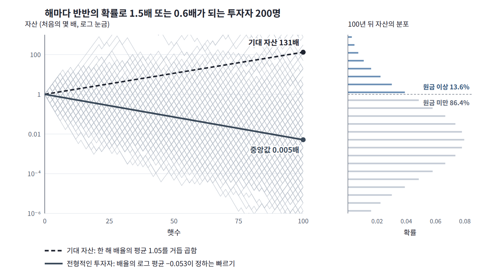

굳힌 평균: 로그를 먼저, 평균은 나중에
앞 페이지의 표에서 두 순서로 낸 평균은 역온도 3에서 2.029와 2.803으로 크게 달랐다. 둘 가운데 어느 쪽이 결합을 한 번 뽑아 만든 실제 계를 알려 줄까? 스핀 계보다 익숙한 예부터 보자.
투자: 기대 자산과 전형적인 자산
두 평균의 차이는 투자에서 쉽게 볼 수 있다. 해마다 자산이 반반의 확률로 1.5배나 0.6배가 되면 한 해 배율의 평균은 1.05라 기대 자산은 해마다 5%씩 늘지만, 전형적인 투자자의 빠르기는 배율의 로그 평균 (ln 1.5 + ln 0.6)/2 = −0.053이 정하므로 대부분은 해마다 약 5%씩 잃는다. 100년 뒤 기대 자산은 처음의 131배인데 중앙값은 0.005배다. 기대 자산은 운 좋은 극소수가 끌어올린 값이고, 전형적인 투자자를 알려 주는 것은 로그의 평균이다.

스핀 계의 두 평균
스핀 계로 돌아가면, 두 순서로 낸 평균 사이에는 늘 부등식이 선다. 로그가 위로 볼록하므로 로그를 먼저 씌워 평균한 값은 평균에 로그를 씌운 값보다 클 수 없다.
왼쪽을 굳힌 평균 (결합을 한 번 뽑아 굳힌 계마다 ln Z를 구하고 그 값을 결합에 대해 평균한 것, quenched average)이라 하고, 물리 문헌에서는 담금질 평균이라고도 옮긴다. 오른쪽처럼 결합까지 스핀과 함께 열평형에 드는 변수로 풀어 두고 Z를 먼저 평균한 뒤 로그를 씌운 것은 풀린 평균(annealed average)이라 부른다. 투자에서 기대 자산이 풀린 평균에, 로그의 평균이 정하는 전형적인 자산이 굳힌 평균에 해당한다. 실제로 관찰하는 것은 결합이 고정된 계 하나이므로 물리적인 값은 굳힌 평균이고, 풀린 평균은 계산하기 쉬운 상한이다.
계 하나가 평균을 대신한다
그런데 굳힌 평균도 결국 결합에 대한 평균이고, 우리가 관찰하는 것은 결합을 한 번 뽑아 고정한 계 하나다. 그 계 하나에서 잰 값이 굳힌 평균과 가까우리라고 믿어도 될까?
스핀이 많아지면 결합을 한 번만 뽑아도 스핀 하나당 ln Z가 거의 늘 그 평균값에 가까워진다. β = 2에서 스핀 하나당 ln Z의 표준편차는 스핀 8·12·16·20개일 때 0.178·0.137·0.117·0.103으로 줄지만, Z 자체의 상대 표준편차는 줄지 않는다. 이처럼 계 하나에서 잰 값이 계가 커질수록 무질서에 대한 평균으로 모이는 성질을 자기 평균(self-averaging)이라 한다. 스핀 하나당 ln Z는 자기 평균이고, Z는 자기 평균이 아니다.
Z가 자기 평균이 아니라는 것은 첫 페이지 표의 마지막 열에서도 보인다. 결합 300개로 낸 평균 Z의 로그는 β = 3에서 2.496으로, 손으로 계산한 2.803에 한참 못 미쳤다. 표본 평균이 참값에 이르지 못하는 것은 평균 Z가 드물게 뽑히는 결합 몇 개에 좌우되기 때문이다. 결합을 2000번 뽑아 보면 β = 3에서 Z가 큰 순서로 상위 1%인 결합 20개가 Z 합계의 93%를 차지한다. 투자에서 기대 자산을 운 좋은 극소수가 끌어올린 것과 같은 모습이다. 그렇다면 Z는 결합에 따라 얼마나 흔들릴까?
ML에서: 「담금질」이라는 같은 이름
1983년 IBM에 있던 커크패트릭은 겔라트, 베키와 함께 무작위 결합 스핀 계의 시뮬레이션 방법을 컴퓨터 부품 배치 같은 최적화 문제에 옮겨 모의 담금질(simulated annealing)을 만들었고, 온도를 천천히 내리며 분포를 옮기는 ML의 여러 절차가 이 이름을 물려받았다. 금속 가공에서는 급히 식혀 굳히는 것(quench)을 담금질, 천천히 식혀 푸는 것(anneal)을 풀림이라 부르지만, ML에서는 온도나 잡음 수준을 천천히 바꾸는 절차를 흔히 담금질이라 옮겨 담금질 중요도 샘플링(annealed importance sampling)이나 담금질 랑주뱅이라 부른다. 그 담금질은 분포를 옮기는 절차의 이름이고, 여기의 굳힌 평균과 풀린 평균은 무질서에 대해 평균을 내는 순서의 이름이다. 두 이름이 섞이지 않도록 이 장은 역할이 드러나는 「굳힌」과 「풀린」을 쓴다.
ML에서: 입력이 많을수록 날카로워지는 경계
장 첫머리에서 입력이 100개일 때는 P/N = 1.8에서 외워질 확률이 0.933, 2.2에서 0.088이었지만, 입력이 400개이면 0.999와 0.003이었다. 외울 수 있는지는 데이터를 뽑을 때마다 달라지는 운의 문제인데, 입력이 많아질수록 무작위 데이터 하나로 얻은 답이 평균적인 답과 같아진다. 외우기의 경계가 데이터 표본 하나가 아니라 무작위 데이터 전체의 성질로 정해지는 것은 자기 평균 덕분이다.